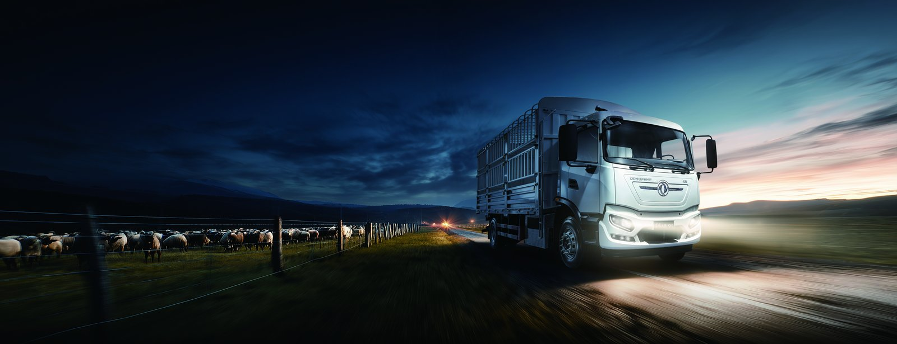

Choosing the right electric truck for Jordanian conditions comes down to matching battery capacity, duty cycle and support infrastructure - and the KT3F electric sprinkler truck is built for exactly this kind of work. With a 262 kWh CATL LFP battery, a 250 kW motor and 250 km of certified range, it covers demanding daily duty while cutting energy cost per kilometer by well over half versus diesel. This guide looks at the KT3F through the lens that matters most to fleet buyers in Jordan, with the KT3F electric sprinkler truck specifications and real operating data throughout, and pointers to the Jordan electric truck market for market-specific context.
Free trade zones concentrate everything that favors electric trucks: short, repetitive routes between factories, warehouses, terminals and gates; professional site management with authority over infrastructure; cargo owners with documented emissions commitments; and increasingly, zone rules that favor or mandate zero-emission operations. Zone duty cycles rarely exceed 50-100 km daily, all within charging reach of a fixed base. The result: FTZs worldwide are electrifying years ahead of their surrounding national fleets. For operators working Jordan's zone network, an electric sprinkler truck like the KT3F electric sprinkler truck - 250 km of certified range from a 262 kWh pack - covers a full multi-shift zone day with capacity to spare.
The defining FTZ truck duty is the zone-to-port shuttle: containers or cargo between factory or warehouse and the terminal gate, runs of a few kilometers repeated dozens of times per shift. This is diesel's worst case - constant acceleration, idle queuing at gates, engines never reaching efficient temperature - and electric's best: regenerative braking harvests every stop, zero idle consumption empties the queue-time waste line, and the KT3F's 250 kW motor shortens every cycle with instant torque. Cost per move typically falls 60-75% on energy alone, before maintenance savings. For zone operators in Jordan competing for cargo on service and cost, shuttle electrification is the highest-leverage investment available.
Zone charging design benefits from what zones have: managed land, professional engineering and concentrated vehicle populations. The standard layout places DC fast chargers at operator depots and the fleet parking zone, with opportunity charging near the highest-cycle working areas - gate queues and terminal interfaces - where trucks pause naturally. A zone running thirty electric trucks typically needs six to ten 60-120 kW chargers plus overnight points, phased with adoption. Zone authorities increasingly provide the electrical backbone: substations and ducting installed as shared infrastructure, with operators adding chargers. In Jordan, early engagement with the zone authority on capacity allocation is the scheduling critical path - power reservations, not charger hardware, gate the timeline.
Zone administrations compete for tenants, and green logistics is now a competitive dimension. Expect to encounter: preferential gate access or priority slots for zero-emission trucks; zone-level emissions reporting requirements that electric fleets satisfy automatically through telematics; tariff incentives or subsidies on zone electricity for vehicle charging; and green zone certifications that tenants' sustainability teams value in their own scope-3 reporting. For Jordanian manufacturers and logistics providers, operating electric trucks inside the zone increasingly appears in customer tenders and retailer scorecards. The KT3F deployment doubles as a compliance and marketing asset: its telematics energy data feeds directly into the emissions documentation zone programs and cargo owners request.
Two ownership models are emerging in zone electrification. Tenant fleets: individual factories and logistics operators run their own electric trucks with depot charging - full control, savings accrue to the operator, suited to high-utilization tenants. Zone-shared fleets: the authority or a concessionaire operates shared electric shuttles and terminal tractors, selling transport as a service to tenants - lower entry barrier, professional management, suited to smaller tenants and seasonal volumes. Many zones land on a hybrid: shared terminal tractors at the port interface, tenant fleets on factory circuits. Either way, the vehicle requirements converge: robust electric trucks like the KT3F at an FOB range of $85,000-$110,000, with the duty-cycle tolerance zone work demands and the 8-year battery warranty shared operators require.
A practical entry sequence for Jordanian zone operators: first, map your zone duty cycles - routes, daily cycles, payloads, gate dwell times - from dispatch records. Second, engage the zone authority on electrical capacity and any zero-emission programs or incentives; their infrastructure calendar shapes yours. Third, pilot two to five trucks on the highest-cycle shuttle lanes, instrumented with telematics, supported by depot charging. Fourth, scale with fleet renewal as pilot data confirms economics. Fifth, document everything - energy data, cost per move, emissions factors - because zone green programs and customer tenders both reward evidence. We support zone operators with duty-cycle analysis, charger specification and tender-ready documentation; the Jordan electric truck market page outlines Jordan market context.
| Item | Specification |
|---|---|
| Model / Type | KT3F electric sprinkler truck |
| Battery | CATL LFP, 262 kWh, liquid-cooled |
| Motor | LvKong permanent-magnet, 250 kW peak |
| Certified range | 250 km (laden duty cycle) |
| Charging | CCS2 DC fast charge, 20-80% in about 60-90 min; battery swap option on selected variants (5-6 min) |
| Battery warranty | 8 years / 4,500 full-equivalent cycles |
| FOB price guide | $85,000-$110,000 |
The financial case for the KT3F rests on arithmetic that favors electric drivetrains at high utilization. Purchase price at an FOB range of $85,000-$110,000 sits above diesel, but energy cost per kilometer falls by 60-75%, scheduled maintenance drops 40-60% with no engine service items, and regenerative braking extends friction brake life two to three times. Insurance and financing terms for electric trucks in Jordan now track diesel norms as underwriters accumulate claims data. The residual value side strengthens the case further: the 8-year/4,500-cycle battery warranty transfers to second owners, putting a factory-backed floor under resale prices. On a duty cycle above 150 km per day, most fleets model payback of the price premium inside three years and lifetime savings of $40,000-$90,000 per truck across an eight-year hold. We provide a fleet-specific TCO model with every quotation, using your actual fuel price, tariff and utilization rather than brochure assumptions.
Long-term parts support decides whether an imported truck fleet thrives or stalls. We maintain a structured parts program for the KT3F: a recommended starter stock of high-turnover items - filters, brake components, sensors, contactors, lamps and coolant - sized to fleet count and consigned at delivery; scheduled replenishment by sea for planned maintenance; and air freight dispatch from our Xi'an warehouse for breakdown-critical orders. Every truck ships with a full parts catalog using factory part numbers, so orders are unambiguous. High-voltage components and battery modules move under dangerous-goods-compliant logistics with the documentation customs authorities require. For fleets in Jordan, we also advise on which wear items can be sourced locally and which should stay factory-genuine - a distinction that protects warranty coverage while controlling cost. The objective is simple: a truck off the road earns nothing, and our parts pipeline is built to keep downtime measured in days, not months.
Structuring the purchase correctly matters as much as choosing the right truck. Standard export terms for the KT3F run on confirmed irrevocable letter of credit or telegraphic transfer with deposit and balance against shipping documents, and we work with buyers' banks across Jordan to make documentation smooth. For fleet-scale orders, staged payment schedules aligned to production and delivery milestones reduce financing cost, and some buyers layer in export credit or leasing structures from their local market. Buyers should also investigate Jordanian green financing programs - development banks and national green funds increasingly offer concessional rates for zero-emission commercial vehicles, which can cut the effective interest cost meaningfully below commercial lending. The FOB range of $85,000-$110,000 for the KT3F should be modeled against these financing options alongside the operating savings, because the right funding structure often improves project economics more than a marginal price negotiation. Our export team supports proforma documentation for bank applications at no charge.
Ready to electrify your fleet? Contact Shaanxi Fenghan Trading — authorized Dongfeng EV truck exporter. WhatsApp: +86 153 1943 1311 | Email: sales@fenghan-trade.com | dongfengevtrucks.com
🌐 Our Network: Fenghan Trade (SAGMOTO/SHACMAN Truck Export) · SAGMOTO cargo truck flatbed box stake